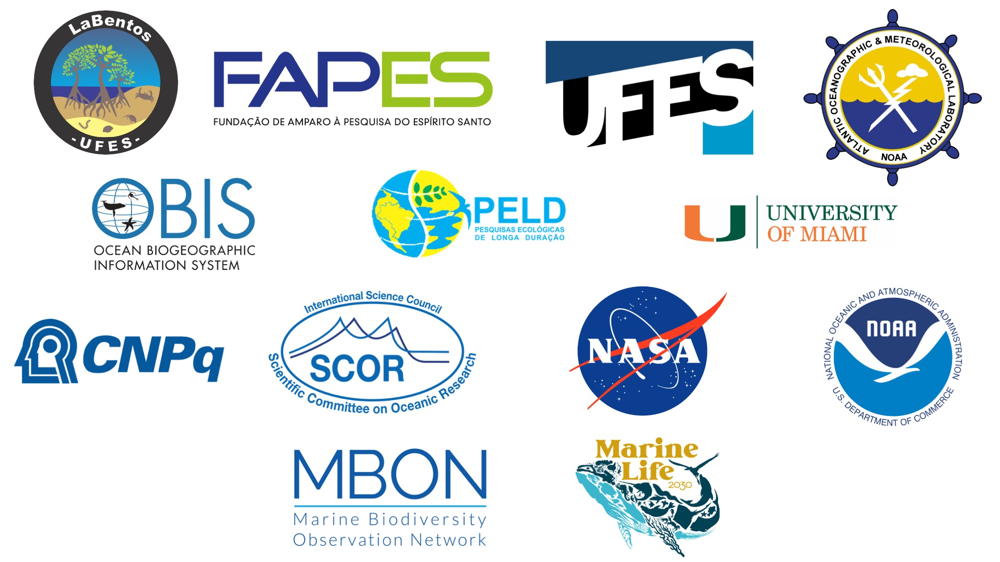

À medida que enfrentamos os desafios presentes e futuros da sustentabilidade, os observatórios do Oceano têm produzido uma grande quantidade de dados com o objetivo de monitorar a saúde e o estado dos ecossistemas marinhos. Atualmente, apenas uma pequena parte desses dados é utilizada na geração de informações e conhecimento para sociedade, e menos ainda é efetivamente aplicado para tomar decisões baseadas na natureza. Para melhorar este cenário, é fundamental adotar boas práticas de gestão de dados, desde a aquisição em campo até o compartilhamento das informações para os usuários.
O OCEAN DATA BOOTCAMP vai reunir especialistas em Oceanografia, Ecologia, Ciências Ambientais, Biodiversidade e Ciência de dados para discutir os recentes esforços globais para construção de sistemas digitais, ampliação do acesso aos dados e ferramentas de automatização de análises ambientais sobre os ecossistemas costeiros e a vida marinha. O evento terá o objetivo de capacitar profissionais para gestão e análise de dados e informações do Oceano, incluindo os temas de padronização, terminologia, curadoria, controle de qualidade, processamento, armazenamento e di- vulgação. Um dos focos do evento serão as redes de observação de longo prazo (PELD, ReBentos, Rede Clima, INCTs, MBON, GOOS), a integração entre dados da biodiversidade marinha aos produtos de sensoriamento remoto por satélite e aplicações da bioinformática.
Fomentar a discussão sobre os avanços dos sistemas e ferramentas digitais para monitoramento da biodiversidade marinha Capacitar os participantes para gestão e análise de dados e informações do oceano.
Vitória/ES Universidade Federal do Espírito Santo
Será um encontro em formato presencial para convidados e algumas vagas para candidatura aberta, para os observatórios de longo-prazo.
Link de inscrição: https://forms.gle/QQQdd69g4QtSyLSW9
